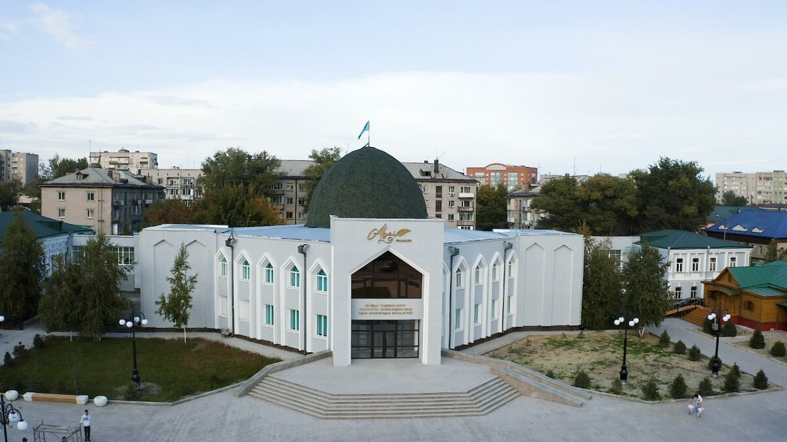
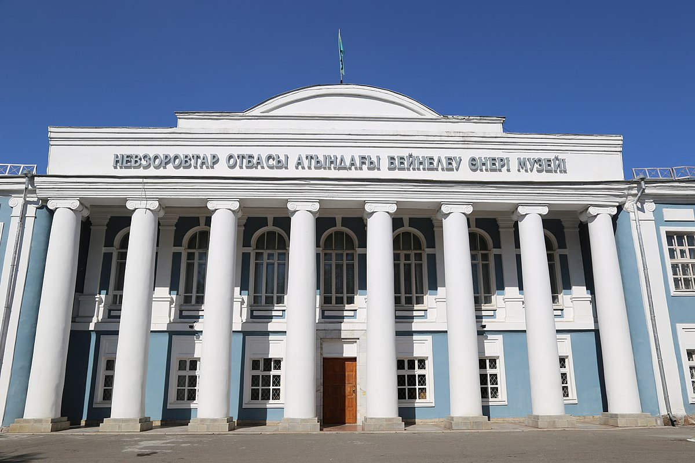
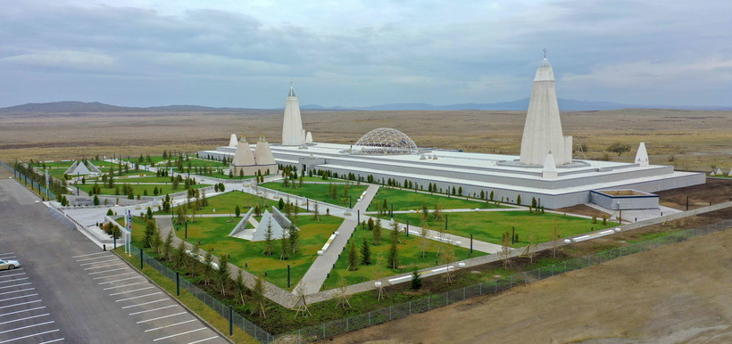

Currently the main art exposition collected in Kazakhstan. A museum is located in a complex of buildings, the oldest o which was built in the 1870s. Is really aestethic. Treasure for the arts-lover.

One of the biggest and modern museums in whole country dedicated to the famous poet Abay Kunanbayev. One of my personal favorites. It is really modern and has a lot of rooms with the latest museum technologies implemented
Currently the main art exposition collected in Kazakhstan. A museum is located in a complex of buildings, the oldest of which was built in the 1870s. Is really aestethic. Treasure for the arts-lover.
You will need to drive to see the memorial complex Abay-Shakarim. A great poet lived and worked in the house. Since it is house and a museum at the same time, you will also have a great opportunity to see how Kazak nation lived in the past. Also, when driving to Zhidebai, you will have an opportunity to see Mazar of Kozy Korpesh and Bayan Sulu. This is the birthplace of the ancient Turkic legend about death and eternal love.
Currently the main art exposition collected in Kazakhstan. A museum is located in a complex of buildings, the oldest o which was built in the 1870s. Is really aestethic. Treasure for the arts-lover.